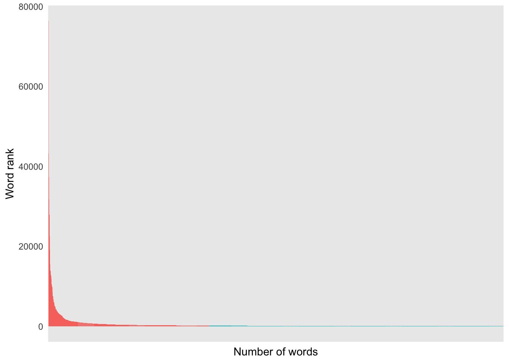
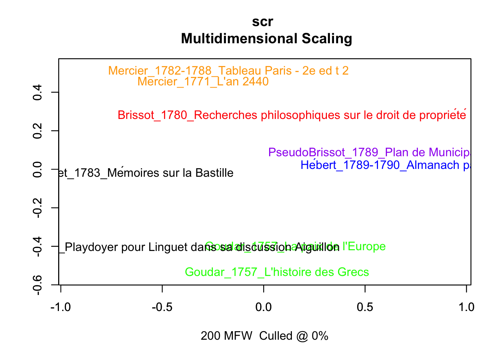
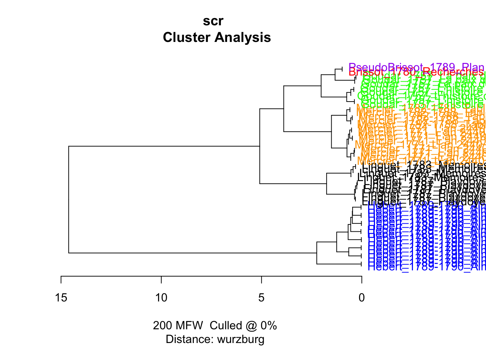
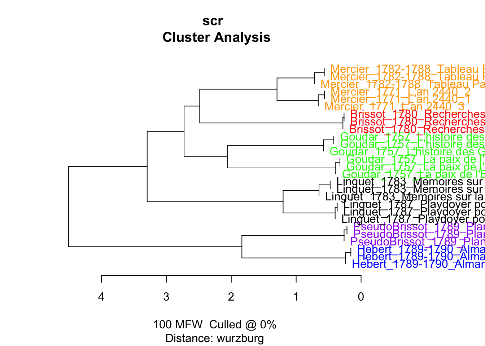
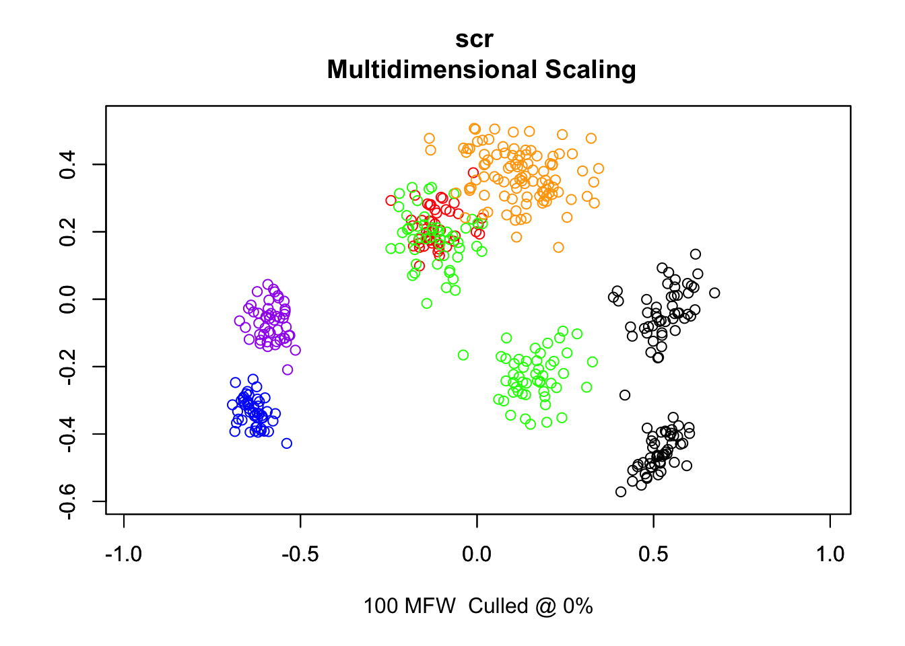

── Attaching core tidyverse packages ──────────────────────── tidyverse 2.0.0 ──
✔ dplyr 1.1.3 ✔ readr 2.1.4
✔ forcats 1.0.0 ✔ stringr 1.5.0
✔ ggplot2 3.4.3 ✔ tibble 3.2.1
✔ lubridate 1.9.2 ✔ tidyr 1.3.0
✔ purrr 1.0.2
── Conflicts ────────────────────────────────────────── tidyverse_conflicts() ──
✖ dplyr::filter() masks stats::filter()
✖ dplyr::lag() masks stats::lag()
ℹ Use the conflicted package (<http://conflicted.r-lib.org/>) to force all conflicts to become errors
library(tidytext)#library(udpipe)library(stylo)
### stylo version: 0.7.4 ###
If you plan to cite this software (please do!), use the following reference:
Eder, M., Rybicki, J. and Kestemont, M. (2016). Stylometry with R:
a package for computational text analysis. R Journal 8(1): 107-121.
<https://journal.r-project.org/archive/2016/RJ-2016-007/index.html>
To get full BibTeX entry, type: citation("stylo")
library(seetrees)library(kableExtra)
Attaching package: 'kableExtra'
The following object is masked from 'package:dplyr':
group_rows
theme_set(theme_minimal())
raw files
# create a filelistlf <-list.files(path ="../corpus/", full.names = T)# head(lf)# read texts and put them in a tibbledf <-tibble(path = lf,text =sapply(path, read_file))tail(df)
retrieve metadata
df <- df %>%# extract metadata from the textfilesmutate(author =str_extract(text,"\\n\\nAutor : .*? Auteur du texte"),author =str_remove_all(author, "\\n\\nAutor : |\\. Auteur du texte"), ) %>%mutate(title =str_extract(text, "\\n\\nTitel : .*?\\n\\n"),title =str_remove_all(title, "\\n\\nTitel : |\\n\\n$") ) %>%mutate(publisher =str_extract(text, "\\n\\nVerleger : .*?\\n\\n"),publisher =str_remove_all(publisher, "\\n\\nVerleger : |\\n\\n$") ) %>%mutate(year =str_extract(text, "\\n\\Erscheinungsdatum : .*?\\n\\n"),year =str_remove_all(year, "\\n\\Erscheinungsdatum : |\\n\\n$") ) %>%mutate(type =str_extract(text, "\\n\\Typ : .*?\\n\\n"),type =str_remove_all(type, "\\n\\Typ : |\\n\\n$") ) %>%mutate(format =str_extract(text, "\\n\\Format : .*?\\n\\n"),format =str_remove_all(format, "\\n\\Format : |\\n\\n$") ) %>%mutate(link_gallica =str_extract(text, "\\n\\nIdentificativo : .*?\\n\\n"),link_gallica =str_remove_all(link_gallica, "\\n\\nIdentificativo : |\\n\\n"),link_gallica =ifelse(!is.na(link_gallica), paste0("http://catalogue.bnf.fr/", link_gallica), link_gallica) ) %>%mutate(ocr_acc =str_extract(text, "Die Erkennungsquote liegt für dieses Dokument bei .*?\\."),ocr_acc =str_remove_all(ocr_acc, "Die Erkennungsquote liegt für dieses Dokument bei |%|\\.") ) %>%# separate metadata from textsseparate_rows(text, sep ="Die Erkennungsquote liegt für dieses Dokument bei") %>%# remove metadatafilter(!str_detect(text, "^Ihre Anfrage")) %>%# some cleaningmutate(text =str_remove_all(text, "^.*?\\%\\.\\n\\n"))head(df)
meta <-read.csv("../metadata.csv", sep =";") %>%select(-X)load("../data/corpus_0709.rda")texts <- df %>%select(path, text)#glimpse(meta)#glimpse(texts)corpus <- meta %>%left_join(texts, by ="path")glimpse(corpus)
Rows: 37
Columns: 10
$ path <chr> "../../corpus//Baudeau_1763_Idées d'un citoyen sur le com…
$ author <chr> "Baudeau, Nicolas (1730-1792?)", "Baudeau, Nicolas (1730-…
$ title <chr> "Idées d'un citoyen sur la puissance du Roi et le commerc…
$ publisher <chr> "[s.n.] (Amsterdam)", "Delalain (Paris)", NA, NA, "Londre…
$ year <chr> "1763", "1776", "1787", "1787", "1787", "1780", "1786", "…
$ type <chr> "monographie imprimée", "monographie imprimée", "monograp…
$ format <chr> "40 p. ; in-8", "In-8° , 172 p.", "61 p. [Acq. 3063-66] ;…
$ link_gallica <chr> "http://catalogue.bnf.fr/ark:/12148/bpt6k96159466", "http…
$ ocr_acc <int> 95, 100, 95, 85, 86, 100, 98, 99, 99, 86, 84, 83, 100, 71…
$ text <chr> "1 D É E S\n\n\" D' U N\n\nCITOYEN\n\nSUR LA PUISSANCE DU…
word n
1 de 76373
2 la 43251
3 les 37331
4 le 31816
5 des 27881
6 que 22508
7 qui 19154
8 en 15489
9 dans 14032
10 il 13794
11 du 12889
12 ne 12810
13 un 12511
14 pour 11838
15 ce 10538
16 par 9981
17 plus 9919
18 une 9771
19 on 8496
20 pas 7556
21 au 7472
22 est 6864
23 cette 6653
24 se 6091
25 ces 6049
26 je 5756
27 leur 5365
28 vous 5127
29 font 5056
30 mais 4973
31 ou 4923
32 tout 4477
33 nous 4310
34 qu'il 4290
35 même 4263
36 aux 4223
37 lui 3933
38 avec 3918
39 tous 3786
40 ils 3737
41 sur 3651
42 elle 3618
43 si 3387
44 fur 3362
45 peut 3314
46 point 3304
47 comme 3230
48 son 3107
49 fait 3062
50 eft 3033
tokens %>%count(word, sort = T) %>%head(2000) %>%mutate(g =ifelse(n <200, "red", "gray")) %>%ggplot(aes(x =reorder_within(word, -n, word), y = n, fill = g)) +scale_x_reordered() +geom_col() +labs(x ="Number of words",y ="Word rank") +theme(axis.text.x =element_blank(),legend.position ="None")

Words by each author
tokens %>%count(author, sort = T) %>%kbl()
author
n
Mercier, Louis-Sébastien (1740-1814)
349575
Necker, Jacques (1732-1804)
176947
Hébert (17..-18..? ; auteur d'un "Almanach parisien")
152514
Lemercier de la Rivière, Paul-Pierre (1719-1801)
142957
Brissot de Warville, Jacques-Pierre (1754-1793)
117568
Linguet, Simon-Nicolas-Henri (1736-1794)
97261
Goudar, Ange (1708-1791?)
93770
Brissot de Warville, Jacques-Pierre
50301
Sieyès, Emmanuel-Joseph (1748-1836)
40305
Dupont de Nemours, Pierre-Samuel (1739-1817)
38386
Jèze (17..-17.. ; avocat)
37116
NA
33831
Condorcet, Jean-Antoine-Nicolas de Caritat marquis de (1743-1794)
33395
Baudeau, Nicolas (1730-1792?)
27931
Beaumarchais, Pierre-Augustin Caron de (1732-1799)
11273
Choderlos de Laclos, Pierre-Ambroise-François (1741-1803); Sieyès, Emmanuel-Joseph (1748-1836)
10496
Choderlos de Laclos, Pierre-Ambroise-François (1741-1803)
8178
Bergasse, Nicolas (1750-1832)
1675
glimpse(tokens)
Rows: 1,423,479
Columns: 10
$ path <chr> "../../corpus//Baudeau_1763_Idées d'un citoyen sur le com…
$ author <chr> "Baudeau, Nicolas (1730-1792?)", "Baudeau, Nicolas (1730-…
$ title <chr> "Idées d'un citoyen sur la puissance du Roi et le commerc…
$ publisher <chr> "[s.n.] (Amsterdam)", "[s.n.] (Amsterdam)", "[s.n.] (Amst…
$ year <chr> "1763", "1763", "1763", "1763", "1763", "1763", "1763", "…
$ type <chr> "monographie imprimée", "monographie imprimée", "monograp…
$ format <chr> "40 p. ; in-8", "40 p. ; in-8", "40 p. ; in-8", "40 p. ; …
$ link_gallica <chr> "http://catalogue.bnf.fr/ark:/12148/bpt6k96159466", "http…
$ ocr_acc <int> 95, 95, 95, 95, 95, 95, 95, 95, 95, 95, 95, 95, 95, 95, 9…
$ word <chr> "citoyen", "sur", "la", "puissance", "du", "roi", "et", "…
tibble [37 × 11] (S3: tbl_df/tbl/data.frame)
$ path : chr [1:37] "../../corpus//Baudeau_1763_Idées d'un citoyen sur le commerce dans l'Orient.txt" "../../corpus//Baudeau_1776_Explication du Tableau économique.txt" "../../corpus//Beaumarchais_1787_Mémoire en réponse au libelle signé Kornmann.txt" "../../corpus//Bergasse_1787_Observations de Bergasse sur un écrit de Beaumarchais.txt" ...
$ author : chr [1:37] "Baudeau, Nicolas (1730-1792?)" "Baudeau, Nicolas (1730-1792?)" "Beaumarchais, Pierre-Augustin Caron de (1732-1799)" "Bergasse, Nicolas (1750-1832)" ...
$ title : chr [1:37] "Idées d'un citoyen sur la puissance du Roi et le commerce de la nation dans l'Orient" "Explication du Tableau économique, à Madame de***, par M. l'abbé Baudeau" "Mémoire de Pierre-Augustin Caron de Beaumarchais ; en réponse au libelle diffamatoire, signé, Guillaume Kornman"| __truncated__ "Observations de M. de Bergasse, sur un écrit de M. de Beaumarchais." ...
$ publisher : chr [1:37] "[s.n.] (Amsterdam)" "Delalain (Paris)" NA NA ...
$ year : chr [1:37] "1763" "1776" "1787" "1787" ...
$ type : chr [1:37] "monographie imprimée" "monographie imprimée" "monographie imprimée" "monographie imprimée" ...
$ format : chr [1:37] "40 p. ; in-8" "In-8° , 172 p." "61 p. [Acq. 3063-66] ; n-16 (18 cm)" "7 p. ; in-4" ...
$ link_gallica: chr [1:37] "http://catalogue.bnf.fr/ark:/12148/bpt6k96159466" "http://catalogue.bnf.fr/ark:/12148/bpt6k6470796d" "http://catalogue.bnf.fr/ark:/12148/bpt6k97634363" "http://catalogue.bnf.fr/ark:/12148/bpt6k30470426" ...
$ ocr_acc : int [1:37] 95 100 95 85 86 100 98 99 99 86 ...
$ text : chr [1:37] "citoyen sur la puissance du roi et le commerce de la nation dans l'orient nos onsilium dedimus amsterdam dcc lx"| __truncated__ "explication du tableau économique explication du tableau économique madame de par l'abbé au au extrait des ephé"| __truncated__ "memoire de pierre augustin caron de beaumarchais rèponse au libelle diffamatoire signé guillaume kornman dont p"| __truncated__ "observations de mo de berg as se sur un écrit de de beaumarchais j’ai auffi quelques obfervations faire fur réc"| __truncated__ ...
$ path_new : chr [1:37] "../corpus_cln//Baudeau_1763_Idées d'un citoyen sur le commerce dans l'Orient.txt" "../corpus_cln//Baudeau_1776_Explication du Tableau économique.txt" "../corpus_cln//Beaumarchais_1787_Mémoire en réponse au libelle signé Kornmann.txt" "../corpus_cln//Bergasse_1787_Observations de Bergasse sur un écrit de Beaumarchais.txt" ...
# for (i in 1:nrow(corpus_cln)) {# write_file(x = corpus_cln$text[i], file = corpus_cln$path_new[i])# }
Load cleaned data
meta <-read.csv("../metadata.csv", sep =";") %>%select(-X)lf <-list.files(path ="../corpus_cln/", full.names = T)# read texts and put them in a tibbledf <-tibble(path = lf,text =sapply(path, read_file))corpus <- meta %>%mutate(path =str_replace_all(path, "\\.\\./corpus/", "corpus_cln/")) %>%left_join(df, by ="path")
glimpse(corpus)
Rows: 37
Columns: 10
$ path <chr> "../corpus_cln//Baudeau_1763_Idées d'un citoyen sur le co…
$ author <chr> "Baudeau, Nicolas (1730-1792?)", "Baudeau, Nicolas (1730-…
$ title <chr> "Idées d'un citoyen sur la puissance du Roi et le commerc…
$ publisher <chr> "[s.n.] (Amsterdam)", "Delalain (Paris)", NA, NA, "Londre…
$ year <chr> "1763", "1776", "1787", "1787", "1787", "1780", "1786", "…
$ type <chr> "monographie imprimée", "monographie imprimée", "monograp…
$ format <chr> "40 p. ; in-8", "In-8° , 172 p.", "61 p. [Acq. 3063-66] ;…
$ link_gallica <chr> "http://catalogue.bnf.fr/ark:/12148/bpt6k96159466", "http…
$ ocr_acc <int> 95, 100, 95, 85, 86, 100, 98, 99, 99, 86, 84, 83, 100, 71…
$ text <chr> "citoyen sur la puissance du roi et le commerce de la nat…
Number of tokens in each text
corpus %>%unnest_tokens(input = text, output = word, token ="words") %>%count(path, sort = T) %>%kbl()
Warning: Outer names are only allowed for unnamed scalar atomic inputs
Performing no sampling (using entire text as sample)
slicing input text into tokens...
turning words into features, e.g. char n-grams (if applicable)...
Total nr. of samples in the corpus: 9
The corpus consists of 535643 tokens
processing 9 text samples
combining frequencies into a table...
culling @ 0 available features (words) 5000
Calculating z-scores...
MFW used:
200
Processing metadata...
Assigning plot colors according to file names...

summary(test1)
Function call:
stylo(gui = F, corpus.dir = "../corpus_test/", corpus.lang = "Other", distance.measure = "wurzburg", mfw.min = 200, mfw.max = 200)
Available variables:
distance.table final distances between each pair of samples
features features (e.g. words, n-grams, ...) applied to data
features.actually.used features (e.g. frequent words) actually analyzed
frequencies.0.culling frequencies of words/features accross the corpus
list.of.edges edges of a network of stylometric similarities
table.with.all.freqs frequencies of words/features accross the corpus
table.with.all.zscores z-scored frequencies accross the corpus
These variables can be accessed by typing e.g.:
test1$distance.table
test1$features.actually.used
------------------------------------------------
features (e.g. frequent words) actually analyzed
------------------------------------------------
[1] de la le les l des
[7] d qui que un il en
[13] on qu du dans une ce
[19] ne pour est par n plus
[25] au se pas je s cette
[31] font ils vous c ces lui
[37] leur mais elle tout eft ou
[43] même avec ont tous aux fur
[49] deux nous étoit son si rue
[55] comme dont sur fait être ses
[61] point avoit j saint me bien
[67] où faire leurs a autres été
[73] sa grand homme autre m peut
[79] cet y paris avoir ai toutes
[85] encore celui roi hommes moins sans
[91] ceux dit fa duc mon ni
[97] quatre tems elles voit après celle
[103] trois toujours à grecs là louis
[109] étoient fut ma nos ii chaque
[115] depuis faut rien entre aiguillon doit
[121] corps fous jamais dire hôtel eux
[127] nom eu mes moi ordre quand
[133] place toute peu notre fans grande
[139] tant ville aussi ci monde parce
[145] i très donc non jour ainsi
[151] quelque droit porte cent ici voir
[157] nature fe générale ans car et
[163] fera lieu partie premier contre fort
[169] nombre votre argent pieds avoient alors
[175] fois france europe grands mille peuple
[181] vie or gens forme livres quelques
[187] te auroit huit jours t ouvrage
[193] pu état général chez es e
[199] hui tes
(total number of elements: 200)
test1$table.with.all.zscores[1:9,1:9]
de
Brissot_1780_Recherches philosophiques sur le droit de propriété -0.4406118
Goudar_1757_L'histoire des Grecs -0.9396236
Goudar_1757_La paix de l'Europe -0.1860000
Hébert_1789-1790_Almanach parisien 2.2146795
Linguet_1783_Mémoires sur la Bastille -0.1593528
Linguet_1787_Playdoyer pour Linguet dans sa discussion Aiguillon -0.2699844
Mercier_1771_L'an 2440 -0.7292652
Mercier_1782-1788_Tableau Paris - 2e ed t 2 -0.5270092
PseudoBrissot_1789_Plan de Municipalité 1.0371674
la
Brissot_1780_Recherches philosophiques sur le droit de propriété 0.42623641
Goudar_1757_L'histoire des Grecs -1.88455094
Goudar_1757_La paix de l'Europe 0.95200395
Hébert_1789-1790_Almanach parisien 0.68108911
Linguet_1783_Mémoires sur la Bastille -0.35884925
Linguet_1787_Playdoyer pour Linguet dans sa discussion Aiguillon -0.82460835
Mercier_1771_L'an 2440 -0.43865080
Mercier_1782-1788_Tableau Paris - 2e ed t 2 0.07249359
PseudoBrissot_1789_Plan de Municipalité 1.37483628
le
Brissot_1780_Recherches philosophiques sur le droit de propriété -0.89969286
Goudar_1757_L'histoire des Grecs -0.87214443
Goudar_1757_La paix de l'Europe -1.56647613
Hébert_1789-1790_Almanach parisien 1.40691062
Linguet_1783_Mémoires sur la Bastille -0.32129382
Linguet_1787_Playdoyer pour Linguet dans sa discussion Aiguillon 0.93066201
Mercier_1771_L'an 2440 0.27122771
Mercier_1782-1788_Tableau Paris - 2e ed t 2 0.07726934
PseudoBrissot_1789_Plan de Municipalité 0.97353756
les
Brissot_1780_Recherches philosophiques sur le droit de propriété 0.88000063
Goudar_1757_L'histoire des Grecs -0.84729035
Goudar_1757_La paix de l'Europe 1.03883032
Hébert_1789-1790_Almanach parisien -0.03201162
Linguet_1783_Mémoires sur la Bastille -0.58839473
Linguet_1787_Playdoyer pour Linguet dans sa discussion Aiguillon -1.87624949
Mercier_1771_L'an 2440 -0.29174610
Mercier_1782-1788_Tableau Paris - 2e ed t 2 0.89054036
PseudoBrissot_1789_Plan de Municipalité 0.82632098
l
Brissot_1780_Recherches philosophiques sur le droit de propriété 1.1502866
Goudar_1757_L'histoire des Grecs -1.8464561
Goudar_1757_La paix de l'Europe -0.4547095
Hébert_1789-1790_Almanach parisien -0.3630185
Linguet_1783_Mémoires sur la Bastille 0.1844760
Linguet_1787_Playdoyer pour Linguet dans sa discussion Aiguillon -0.8616956
Mercier_1771_L'an 2440 0.5668371
Mercier_1782-1788_Tableau Paris - 2e ed t 2 0.3062253
PseudoBrissot_1789_Plan de Municipalité 1.3180548
des
Brissot_1780_Recherches philosophiques sur le droit de propriété -1.0195661
Goudar_1757_L'histoire des Grecs -0.6440128
Goudar_1757_La paix de l'Europe 1.1315917
Hébert_1789-1790_Almanach parisien 0.5056748
Linguet_1783_Mémoires sur la Bastille -0.6342460
Linguet_1787_Playdoyer pour Linguet dans sa discussion Aiguillon -1.2061871
Mercier_1771_L'an 2440 -0.1855348
Mercier_1782-1788_Tableau Paris - 2e ed t 2 0.3147963
PseudoBrissot_1789_Plan de Municipalité 1.7374840
d
Brissot_1780_Recherches philosophiques sur le droit de propriété -1.053691896
Goudar_1757_L'histoire des Grecs 0.003132832
Goudar_1757_La paix de l'Europe 0.112454364
Hébert_1789-1790_Almanach parisien -0.243466802
Linguet_1783_Mémoires sur la Bastille 0.250379151
Linguet_1787_Playdoyer pour Linguet dans sa discussion Aiguillon 2.350318525
Mercier_1771_L'an 2440 -0.183983699
Mercier_1782-1788_Tableau Paris - 2e ed t 2 -0.151483181
PseudoBrissot_1789_Plan de Municipalité -1.083659293
qui
Brissot_1780_Recherches philosophiques sur le droit de propriété 0.04404255
Goudar_1757_L'histoire des Grecs 0.12801331
Goudar_1757_La paix de l'Europe 0.73164536
Hébert_1789-1790_Almanach parisien -0.75076635
Linguet_1783_Mémoires sur la Bastille -0.83536668
Linguet_1787_Playdoyer pour Linguet dans sa discussion Aiguillon -1.65970227
Mercier_1771_L'an 2440 1.56332660
Mercier_1782-1788_Tableau Paris - 2e ed t 2 0.97378722
PseudoBrissot_1789_Plan de Municipalité -0.19497975
que
Brissot_1780_Recherches philosophiques sur le droit de propriété 0.52949964
Goudar_1757_L'histoire des Grecs -0.15477319
Goudar_1757_La paix de l'Europe 1.04114511
Hébert_1789-1790_Almanach parisien -1.87297759
Linguet_1783_Mémoires sur la Bastille 0.77268012
Linguet_1787_Playdoyer pour Linguet dans sa discussion Aiguillon 1.06641178
Mercier_1771_L'an 2440 0.06563834
Mercier_1782-1788_Tableau Paris - 2e ed t 2 -0.32552690
PseudoBrissot_1789_Plan de Municipalité -1.12209731
Brissot_1780_Recherches philosophiques sur le droit de propriété
- text length (in words): 17526
- nr. of samples: 1
- nr. of words dropped at the end of the text: 7526
Goudar_1757_L'histoire des Grecs
- text length (in words): 58292
- nr. of samples: 5
- nr. of words dropped at the end of the text: 8292
Goudar_1757_La paix de l'Europe
- text length (in words): 35128
- nr. of samples: 3
- nr. of words dropped at the end of the text: 5128
Hébert_1789-1790_Almanach parisien
- text length (in words): 162056
- nr. of samples: 16
- nr. of words dropped at the end of the text: 2056
Linguet_1783_Mémoires sur la Bastille
- text length (in words): 42491
- nr. of samples: 4
- nr. of words dropped at the end of the text: 2491
Linguet_1787_Playdoyer pour Linguet dans sa discussion Aiguillon
- text length (in words): 63025
- nr. of samples: 6
- nr. of words dropped at the end of the text: 3025
Mercier_1771_L'an 2440
- text length (in words): 91505
- nr. of samples: 9
- nr. of words dropped at the end of the text: 1505
Mercier_1782-1788_Tableau Paris - 2e ed t 2
- text length (in words): 52939
- nr. of samples: 5
- nr. of words dropped at the end of the text: 2939
PseudoBrissot_1789_Plan de Municipalité
- text length (in words): 12681
- nr. of samples: 1
- nr. of words dropped at the end of the text: 2681
turning words into features, e.g. char n-grams (if applicable)...
Total nr. of samples in the corpus: 50
The corpus consists of 500000 tokens
processing 50 text samples
.....
combining frequencies into a table...
culling @ 0 available features (words) 5000
Calculating z-scores...
MFW used:
200
Processing metadata...
Assigning plot colors according to file names...

view_tree(test_norm_sampling, k =2, label_size =3)
Performing random sampling (using random sample size = words)
slicing input text into tokens...
turning words into features, e.g. char n-grams (if applicable)...
Brissot_1780_Recherches philosophiques sur le droit de propriété
- text length (in words): 17526
- nr. of random samples: 3
- sample length: 3000
Goudar_1757_L'histoire des Grecs
- text length (in words): 58292
- nr. of random samples: 3
- sample length: 3000
Goudar_1757_La paix de l'Europe
- text length (in words): 35128
- nr. of random samples: 3
- sample length: 3000
Hébert_1789-1790_Almanach parisien
- text length (in words): 162056
- nr. of random samples: 3
- sample length: 3000
Linguet_1783_Mémoires sur la Bastille
- text length (in words): 42491
- nr. of random samples: 3
- sample length: 3000
Linguet_1787_Playdoyer pour Linguet dans sa discussion Aiguillon
- text length (in words): 63025
- nr. of random samples: 3
- sample length: 3000
Mercier_1771_L'an 2440
- text length (in words): 91505
- nr. of random samples: 3
- sample length: 3000
Mercier_1782-1788_Tableau Paris - 2e ed t 2
- text length (in words): 52939
- nr. of random samples: 3
- sample length: 3000
PseudoBrissot_1789_Plan de Municipalité
- text length (in words): 12681
- nr. of random samples: 3
- sample length: 3000
Total nr. of samples in the corpus: 27
The corpus consists of 81000 tokens
processing 27 text samples
..
combining frequencies into a table...
culling @ 0 available features (words) 5000
Calculating z-scores...
MFW used:
100
Processing metadata...
Assigning plot colors according to file names...

view_tree(test_random_sampling, k =2, label_size =3)
Performing random sampling (using random sample size = words)
slicing input text into tokens...
turning words into features, e.g. char n-grams (if applicable)...
Brissot_1780_Recherches philosophiques sur le droit de propriété
- text length (in words): 17526
- nr. of random samples: 50
- sample length: 3000
Goudar_1757_L'histoire des Grecs
- text length (in words): 58292
- nr. of random samples: 50
- sample length: 3000
Goudar_1757_La paix de l'Europe
- text length (in words): 35128
- nr. of random samples: 50
- sample length: 3000
Hébert_1789-1790_Almanach parisien
- text length (in words): 162056
- nr. of random samples: 50
- sample length: 3000
Linguet_1783_Mémoires sur la Bastille
- text length (in words): 42491
- nr. of random samples: 50
- sample length: 3000
Linguet_1787_Playdoyer pour Linguet dans sa discussion Aiguillon
- text length (in words): 63025
- nr. of random samples: 50
- sample length: 3000
Mercier_1771_L'an 2440
- text length (in words): 91505
- nr. of random samples: 50
- sample length: 3000
Mercier_1782-1788_Tableau Paris - 2e ed t 2
- text length (in words): 52939
- nr. of random samples: 50
- sample length: 3000
PseudoBrissot_1789_Plan de Municipalité
- text length (in words): 12681
- nr. of random samples: 50
- sample length: 3000
Total nr. of samples in the corpus: 450
The corpus consists of 1350000 tokens
processing 450 text samples
.............................................
combining frequencies into a table...
culling @ 0 available features (words) 5000
Calculating z-scores...
MFW used:
100
Processing metadata...
Assigning plot colors according to file names...

Distances distributions
Mercier vs Goudar
summary(test_random_sampling)
Function call:
stylo(gui = F, corpus.dir = "../corpus_test/", analysed.features = "w", mfw.min = 100, mfw.max = 100, sampling = "random.sampling", sample.size = 3000, number.of.samples = 50, distance.measure = "wurzburg", corpus.lang = "Other", analysis.type = "MDS", text.id.on.graphs = "points", dump.samples = T)
Available variables:
distance.table final distances between each pair of samples
features features (e.g. words, n-grams, ...) applied to data
features.actually.used features (e.g. frequent words) actually analyzed
frequencies.0.culling frequencies of words/features accross the corpus
list.of.edges edges of a network of stylometric similarities
table.with.all.freqs frequencies of words/features accross the corpus
table.with.all.zscores z-scored frequencies accross the corpus
These variables can be accessed by typing e.g.:
test_random_sampling$distance.table
Brissot_1780_Recherches philosophiques sur le droit de propriété_1
Brissot_1780_Recherches philosophiques sur le droit de propriété_1 0.0000000
Brissot_1780_Recherches philosophiques sur le droit de propriété_2 0.1995675
Brissot_1780_Recherches philosophiques sur le droit de propriété_3 0.2208567
Brissot_1780_Recherches philosophiques sur le droit de propriété_2
Brissot_1780_Recherches philosophiques sur le droit de propriété_1 0.1995675
Brissot_1780_Recherches philosophiques sur le droit de propriété_2 0.0000000
Brissot_1780_Recherches philosophiques sur le droit de propriété_3 0.1917561
Brissot_1780_Recherches philosophiques sur le droit de propriété_3
Brissot_1780_Recherches philosophiques sur le droit de propriété_1 0.2208567
Brissot_1780_Recherches philosophiques sur le droit de propriété_2 0.1917561
Brissot_1780_Recherches philosophiques sur le droit de propriété_3 0.0000000